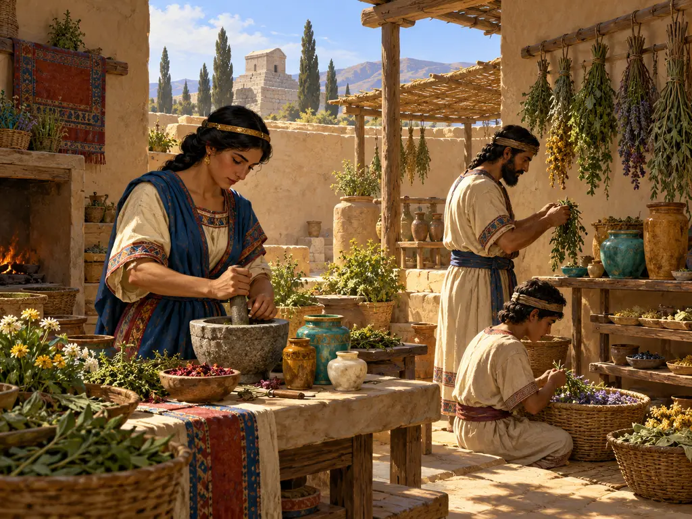
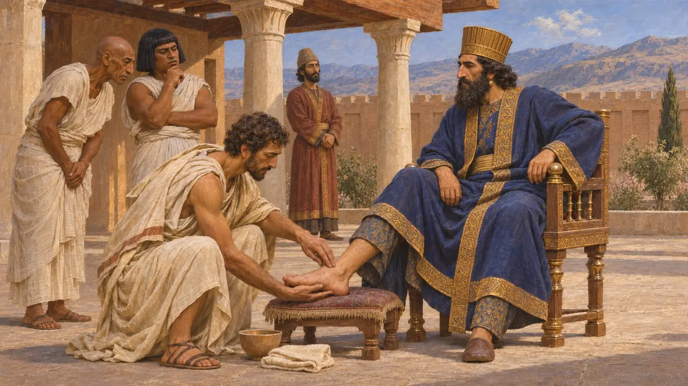
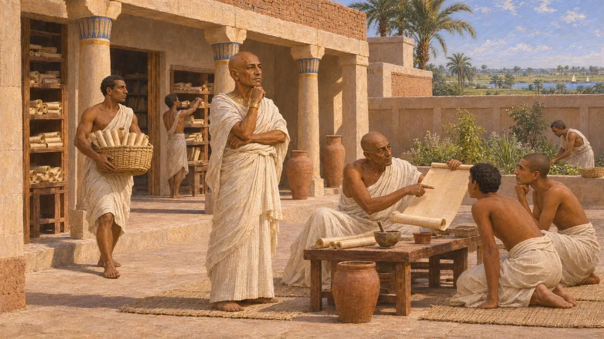
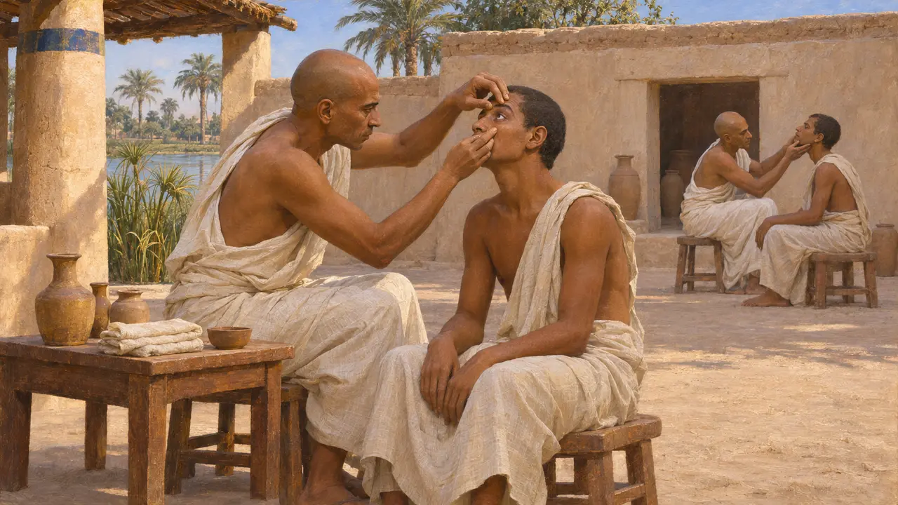
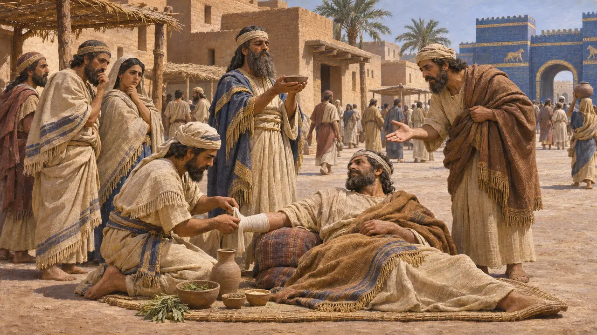
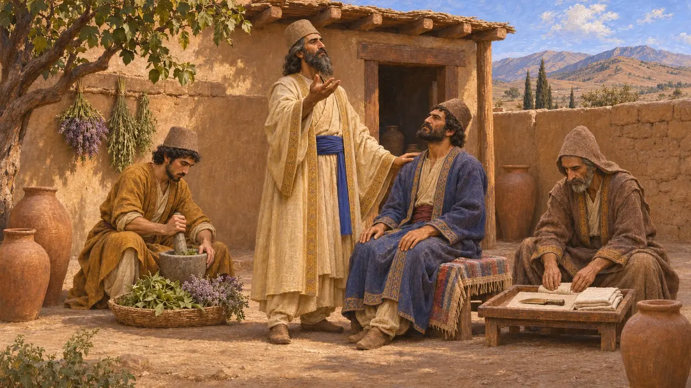

دار المعالج
المعالجون في الإمبراطورية الفارسية والأراضي الخاضعة لها، القرنان السادس والخامس ق.م
لم تعرف الإمبراطورية الفارسية مهنة طبية واحدة. فقد عمل المعالجون المصريون والبابليون واليونانيون كلٌّ وفق تقاليده، واستقدم الملك أمهرهم إلى بلاطه. ومعظم ما وصلنا يتحدث عن أطباء البلاط ومدارس المعابد، ولا يقول إلا القليل عن رعاية عامة الأسر.
في اللعبة: في اللعبة يسير معالج من دار المعالج إلى البيوت على امتداد الطريق، وتحتاج البيوت بفناء إلى واحد منه. وهذا تبسيط: فلا يصف أي مصدر خدمة علاج عامة متجولة في شوارع المدن الفارسية.

الأطباء الأجانب في بلاط الملك
رواية قديمةيقول هيرودوت إن قورش طلب من الفرعون أحمس أمهر طبيب عيون في مصر، فحنق الطبيب لإبعاده، وحرّض قمبيز لاحقًا على طلب ابنة أحمس، وهو طلب أسهم في إشعال الحرب. ويروي أيضًا أن داريوس التوى كاحله أثناء الصيد فزاده أطباؤه المصريون سوءًا، فعالجه ديموكيديس الكروتوني، وهو أسير يوناني من حاشية الساتراب أوريتيس، فشفاه ونال مكافأة سخية. وتُظهر القصتان كلتاهما اعتماد الملك على أطباء أجانب.
Herodotus 3.1; Herodotus 3.129-130

وجاحور رسنت وبيت الحياة
في السجلاتيحمل تمثال لوجاحور رسنت، محفوظ اليوم في متاحف الفاتيكان، روايته الخاصة بالهيروغليفية. فقد خدم آخر ملوك الأسرة الصاوية، ثم قمبيز وداريوس، ويصف نفسه بكبير الأطباء. ويذكر أن داريوس، وهو في عيلام، أعاده إلى مصر ليُحيي بيت الحياة، وهو مؤسسة المعبد التي كانت تُنسخ فيها النصوص وتُدرَّس، ومنها النصوص الطبية. وهي من الوثائق القليلة من ذلك العصر التي تكشف عن اهتمام ملكي بالطب.
Statue of Udjahorresnet (Vatican, Museo Gregoriano Egizio); A. B. Lloyd, The Inscription of Udjahorresnet, 1982

متخصصون مصريون
رواية قديمةيكتب هيرودوت أن الطب المصري كان مقسَّمًا، فلا يعالج كل طبيب إلا داءً واحدًا. وفي روايته كان بعضهم يعالج العيون، وآخرون الرأس أو الأسنان أو البطن. وتؤكد البرديات الطبية المصرية وجود ألقاب للمتخصصين، وإن كان المؤرخون يرون أنه صوّر هذا التقسيم أشدّ صرامة مما كان عليه.
Herodotus 2.84

هيرودوت والمعالجون البابليون
متنازع عليهيكتب هيرودوت أن البابليين لم يكن لديهم أطباء، بل كانوا يضعون مرضاهم في الساحة ليقدّم لهم المارّة النصح. لكن الألواح المسمارية تناقضه. فقد عرفت بلاد بابل نوعين من المعالجين المدرَّبين: الآسو الذي كان يعالج بالعقاقير والضمادات، والآشيبو الذي كان يشخّص ويعالج بالطقوس. وكانت كتيّباتهم لا تزال تُنسخ في العصر الفارسي.
Herodotus 1.197; M. J. Geller, Ancient Babylonian Medicine, 2010

المِبضع والأعشاب والكلمة المقدسة
أسطورة لاحقةالفيديفداد نص كهنوتي زرادشتي يُختلف في تاريخ تأليفه، ولم يُدوَّن إلا في زمن متأخر كثيرًا. ويذكر ثلاثة أصناف من المعالجين: من يعالج بالمِبضع، ومن يعالج بالنباتات، ومن يعالج بالكلمة المقدسة، ويجعل الأخير أرفعهم منزلة. كما يحدد الأجور بحسب مرتبة المريض. ولا يُعرف إلى أي حد يعكس شيء من ذلك ما كان يُمارَس في عهد داريوس، لذا يحسن أن يُقرأ بوصفه تقليدًا متأخرًا.
Videvdad 7
المصادر
- Herodotus 3.1; 3.129-137
- Statue of Udjahorresnet (Vatican, Museo Gregoriano Egizio)
- A. B. Lloyd, The Inscription of Udjahorresnet, 1982
- Herodotus 1.197; 2.84
- M. J. Geller, Ancient Babylonian Medicine, 2010
- P. Briant, From Cyrus to Alexander, 2002